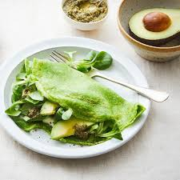
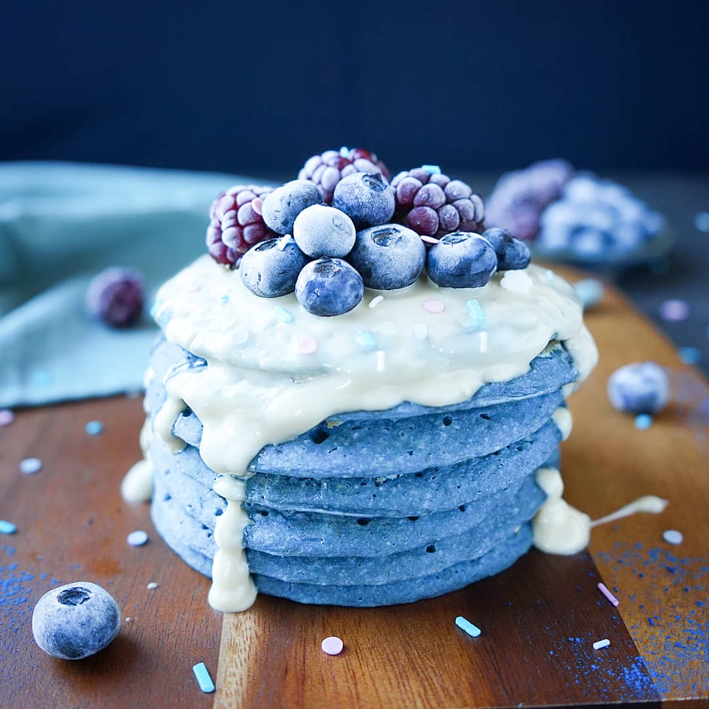
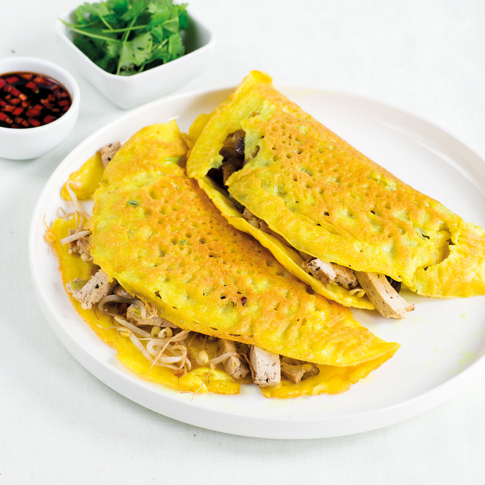
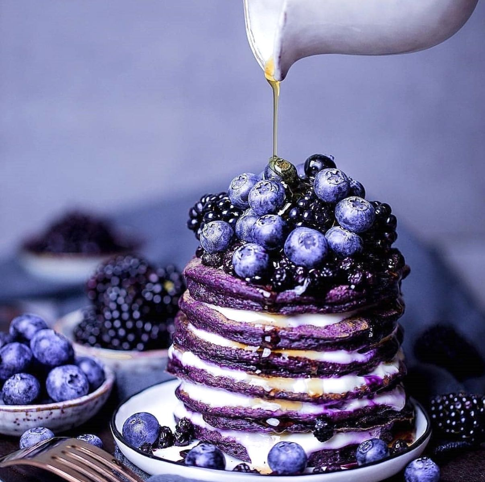
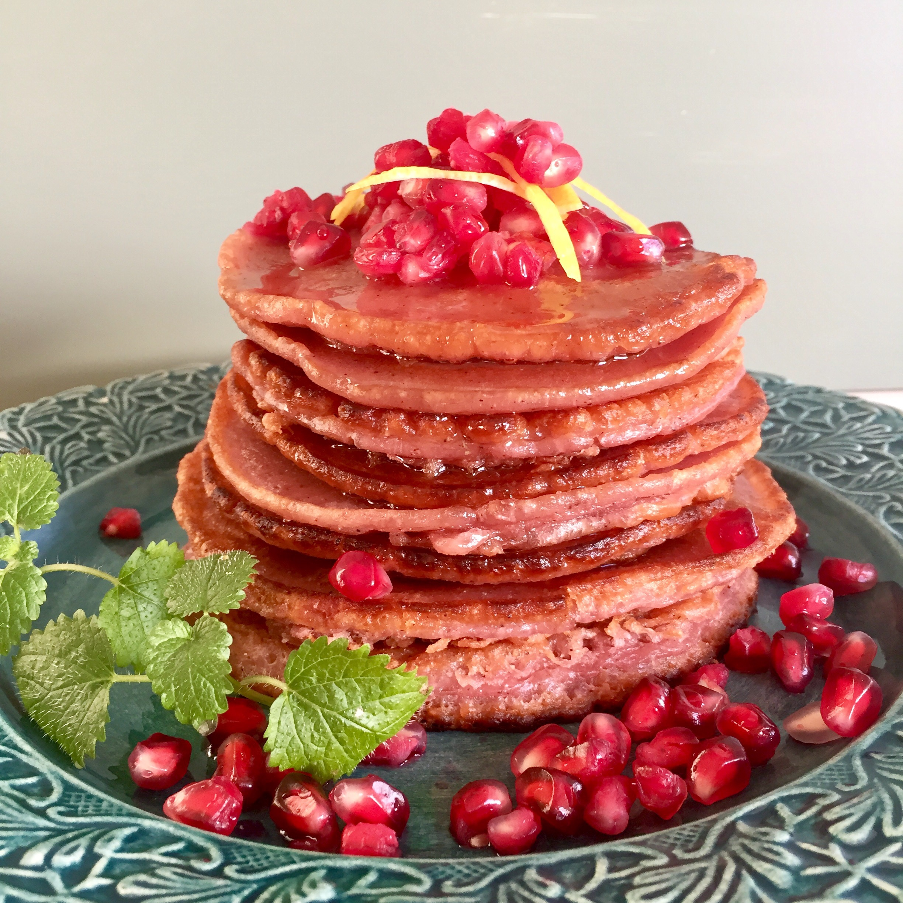

Hitta dina nya favoritrecept!

Klassiska pannkakor
Gör traditionellatunna pannkakor med detta enkla och goda pannkaksrecept. Rekomenderar denna!

Gröna pannkakor
Låt Hulken inspirera dig! Dessa matiga, gröna pannkakor, berikade med nyttiga grönsaker, är den perfekta lunchen.

Blåa pannkakor
Ett frukostäventyr! Ljusa upp dagen med dessa lekfulla, blåa pannkakor toppade med färska bär och en skvätt vit sirap

Gula taco pannkakor
Dags för pannkaks-fusion! Vänd upp och ned på tacokvällen med dessa kryddiga pannkakor fyllda med dina favoriter.

Lila pannkakor
Lyxigt och bärigt! En djup lila dröm, generöst dränkt i sirap och fylld med mörka bär. Perfekt för den sötsugna gourmanden.

Rosa pannkakor
En söt och syrlig succé! Dessa vackra, rosa pannkakor får sin färg från röda frukter och blir en given höjdpunkt på brunchbordet.